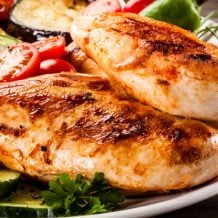
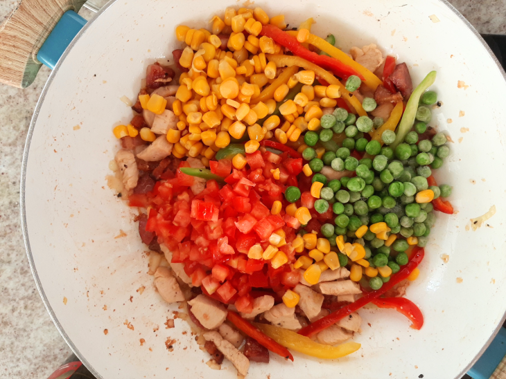

-
 57 receitas com frango que são deliciosas e fáceis de preparar
57 receitas com frango que são deliciosas e fáceis de preparar
-

42 receitas com peito de frango práticas e irresistíveis
-
 32 receitas de filé de frango para variar o cardápio do dia a dia
32 receitas de filé de frango para variar o cardápio do dia a dia
-
 10 receitas de fricassê de frango cremoso que fazem sucesso na mesa
10 receitas de fricassê de frango cremoso que fazem sucesso na mesa
 Macarrao na chapa
Macarrao na chapa
Ingredientes
Modo de preparo
Reúna todos os ingredientes;
Cozinhe o macarrão em água
fervente, até ficar al dente;
Em uma panela tipo tacho, aqueça o
azeite e frite o bacon;
Acrescente o frango e a calabresa,
temperando com sal e pimenta.
Refogue bem;
Quando as carnes estiverem bem
douradas, adicione os pimentões, a
cebola, o alho e frite bem;

Depois disso, incorpore os tomates, o
milho e a ervilha;
Quando tudo estiver bem refogado,
adicione o macarrão e mexa;
Desligue o fogo e salpique o cheiro
-verde por cima. Está pronto! Sirva e
aproveite.